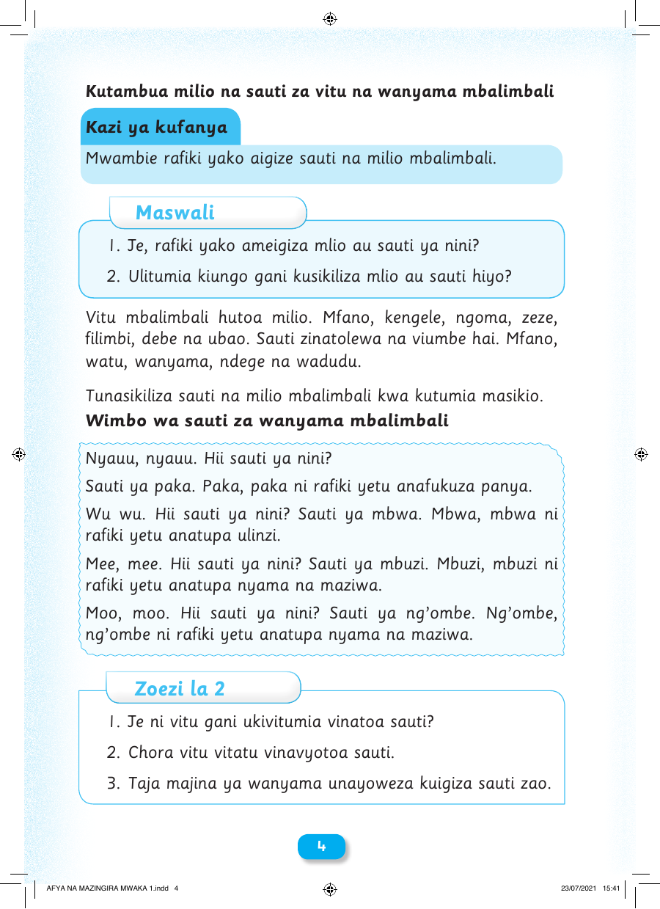

Kutambua milio na sauti za vitu na wanyama mbalimbali Kazi ya kufanya Mwambie rafiki yako aigize sauti na milio mbalimbali. Maswali 1. Je, rafiki yako ameigiza mlio au sauti ya nini? 2. Ulitumia kiungo gani kusikiliza mlio au sauti hiyo? Vitu mbalimbali hutoa milio. Mfano, kengele, ngoma, zeze, filimbi, debe na ubao. Sauti zinatolewa na viumbe hai. Mfano, watu, wanyama, ndege na wadudu. Tunasikiliza sauti na milio mbalimbali kwa kutumia masikio. Wimbo wa sauti za wanyama mbalimbali Nyauu, nyauu. Hii sauti ya nini? Sauti ya paka. Paka, paka ni rafiki yetu anafukuza panya. Wu wu. Hii sauti ya nini? Sauti ya mbwa. Mbwa, mbwa ni rafiki yetu anatupa ulinzi. Mee, mee. Hii sauti ya nini? Sauti ya mbuzi. Mbuzi, mbuzi ni rafiki yetu anatupa nyama na maziwa. Moo, moo. Hii sauti ya nini? Sauti ya ng’ombe. Ng’ombe, ng’ombe ni rafiki yetu anatupa nyama na maziwa. Zoezi la 2 1. Je ni vitu gani ukivitumia vinatoa sauti? 2. Chora vitu vitatu vinavyotoa sauti. 3. Taja majina ya wanyama unayoweza kuigiza sauti zao. 4 AFYA NA MAZINGIRA MWAKA 1.indd 4 23/07/2021 15:41